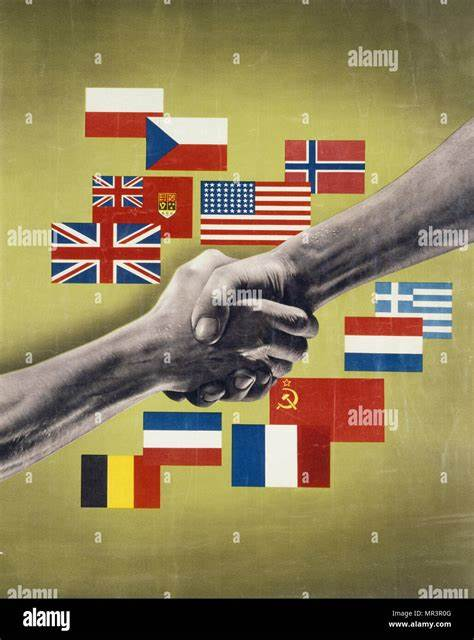
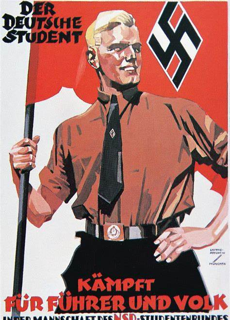
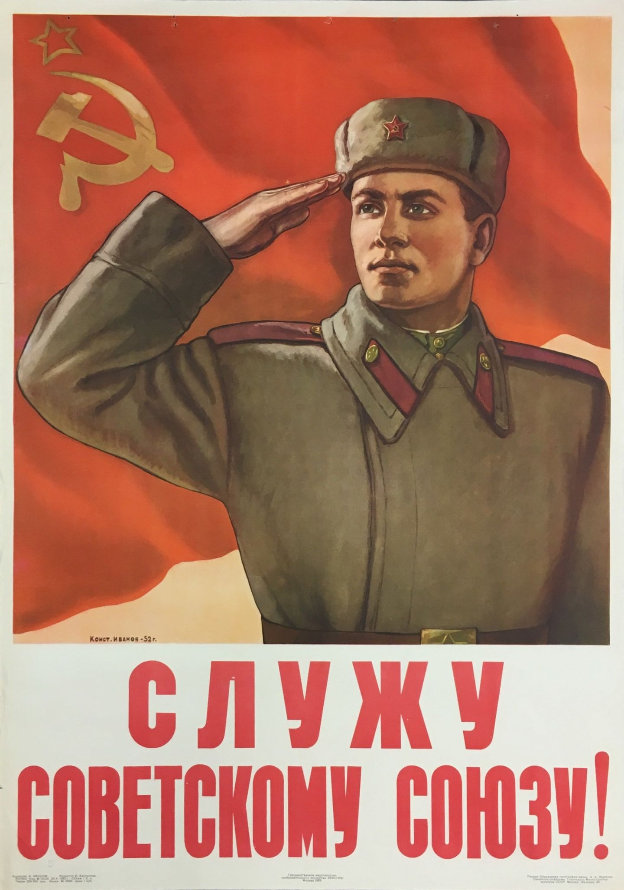
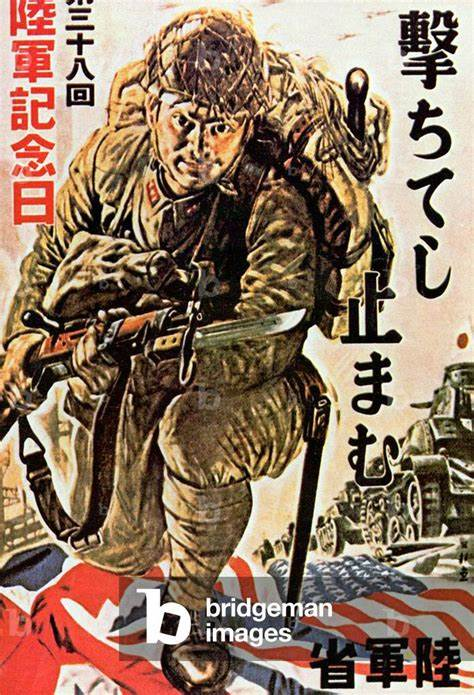

Propaganda na Segunda Guerra Mundial
Durante a Segunda Guerra Mundial, a propaganda foi uma ferramenta poderosa usada por todos os lados para influenciar a opinião pública, aumentar o moral e mobilizar apoio para o esforço de guerra. Aqui estão alguns exemplos notáveis de propaganda de guerra:
1. Propaganda Aliada
Os Aliados usaram a propaganda para promover a unidade e a resistência contra as potências do Eixo. Cartazes, filmes e transmissões de rádio foram usados para encorajar o apoio ao esforço de guerra e demonizar o inimigo.
2. Propaganda Nazista
A Alemanha nazista, sob a liderança de Joseph Goebbels, usou a propaganda para promover a ideologia nazista e justificar a guerra. A propaganda nazista frequentemente retratava os Aliados como bárbaros e desumanos.
3. Propaganda Soviética
A União Soviética usou a propaganda para mobilizar o apoio interno e promover a imagem do Exército Vermelho como libertador. Cartazes e filmes destacavam a bravura dos soldados soviéticos e a crueldade dos invasores nazistas.
4. Propaganda Japonesa
O Japão usou a propaganda para promover o espírito de sacrifício e lealdade ao imperador. A propaganda japonesa frequentemente destacava a superioridade cultural e militar do Japão.
5. Técnicas de Propaganda
As técnicas de propaganda usadas durante a Segunda Guerra Mundial incluíam o uso de imagens visuais impactantes, slogans emocionais e música para evocar emoções e fomentar a unidade nacional.